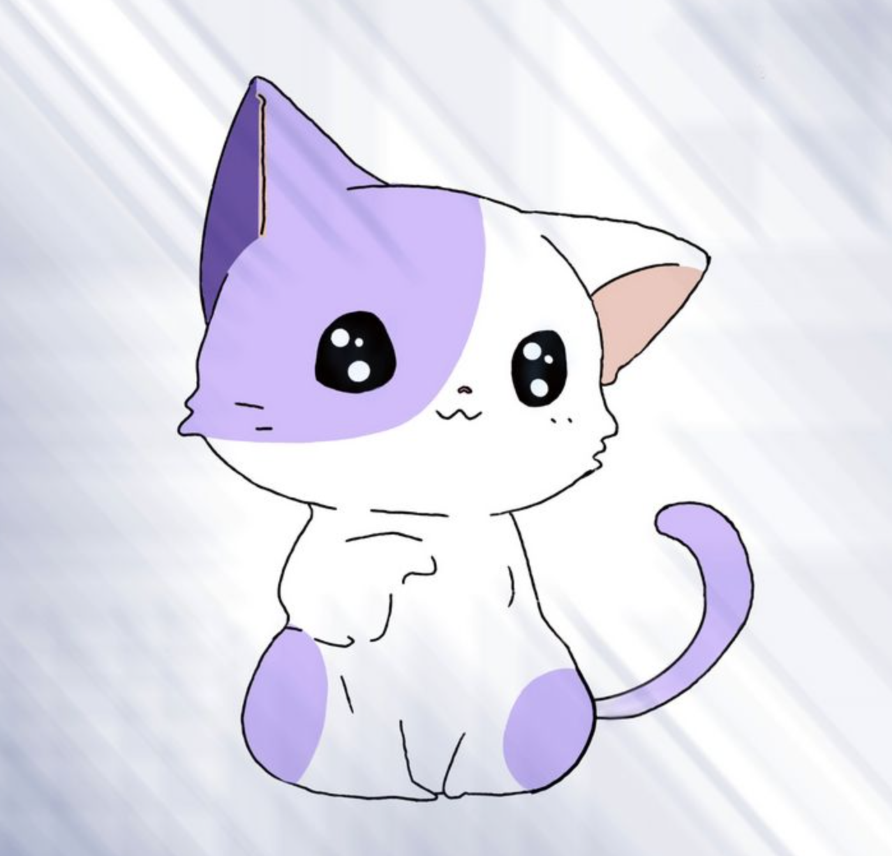

My College Essay
In my hands, copy paper and tape turn into life-size skateboards, gift boxes, dolls, wallets, and flowers.
Using just these materials, I would create the things that I didn’t have, such as my cousin’s scooter. Instead of
being envious of his cool ride, I decided to make my own paper version and make him jealous of mine. After hours of
meticulous engineering, I had constructed the perfect scooter. I resolutely scooted around the kitchen with him, using
my full body weight to overcome the friction of the crumpled paper "wheels" while he sped through the kitchen on his motorized scooter.
My College Essay Part 2
As I grew older, my love for making things only grew. I started making realistic landscapes with my colored pencils. There’s nothing
more calming than feeling the smoothness of the strokes, the waxy colors blooming from the pencil tip to form beautiful works. These
same vivid colors bloom on my Bharatanatyam costume as I perform my choreographies under the dazzling stage lights. When I'm dancing,
I'm always creating. My hastas, facial expressions, and gestures are all my own artistry. No one else dances the way I dance.
My College Essay Part 3
Enter my first computer science class. I learned that programming was not as easy as it looked in the movies. Felicity Smoak and Light Yagami
could hack into government systems in seconds, but it took me hours to finish programming a 2-D array. However, the best part of coding is not
completing the program but beginning it. In programming, there are an infinite number of ways to find the correct solution, so I can create my
own path. Finally getting the right output after hours of programming is exhilarating, but it is a mere trifle compared to the thrill of a new
coding challenge, the start of a new creation.

My College Essay Part 4
Throughout my life, I’ve made many things, using many different materials and techniques. I no longer make paper inventions, but I continue my
journey of creation through stories, art, dance, technology, and more. While my paper scooter remains buried in time, my dedication to creating
is everlasting.
sorry, I didn't know what else to put here ;-;